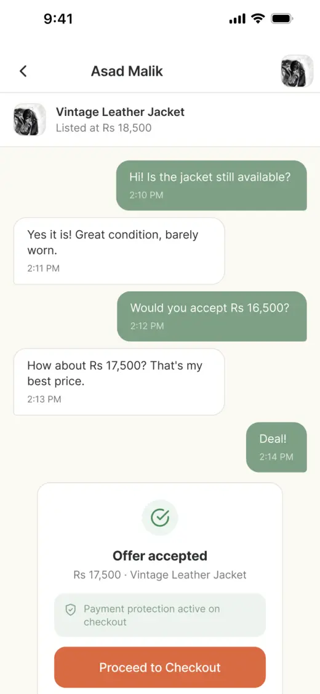
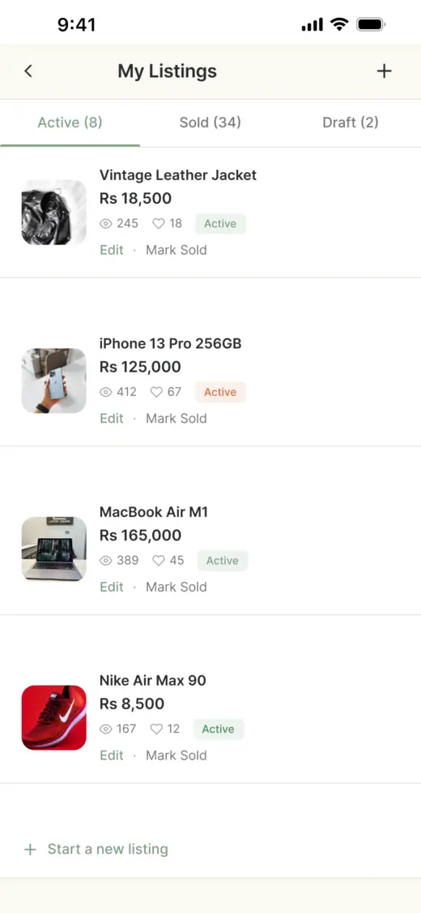
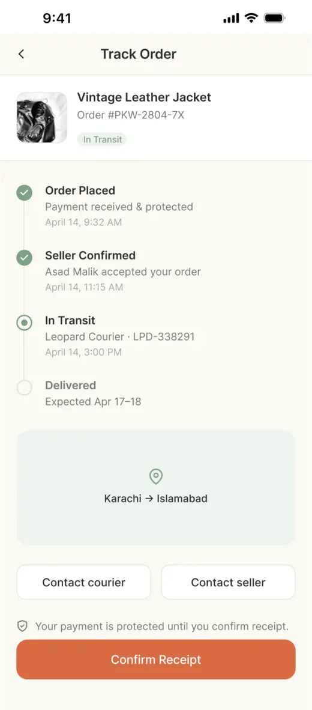

Independent concept / Mobile marketplace
Pickwise — designing for more confident purchases.
A second-hand marketplace concept exploring seller trust, product comparison and payment protection. Research with five participants informed a quieter, more focused interface.
- Role
- Solo product designer
- Duration
- 4 weeks
- Tools
- Figma
- Scope
- Research, flows, UI and prototype
Key change A prominent AI Picks banner was replaced with a lighter feed and category preference-setting after four of five participants found it unclear or intrusive.
Outcome About 30 high-fidelity screens across six flow areas. The revised prototype has not been re-tested or launched.
01Context & scope
Pickwise is a self-initiated mobile marketplace concept for Pakistan. It explores how budget-conscious buyers could evaluate second-hand items with clearer product information, seller details and transaction support.
The brief centred on four needs: finding trustworthy listings, understanding condition, comparing options and completing a purchase with less uncertainty. The intended user is a buyer who wants the value of second-hand shopping but is concerned about quality or scams.
I worked solo over four weeks, covering the brief, competitive review, user flows, four low-fidelity screens, high-fidelity UI and a clickable prototype. The design contains about 30 screens across six areas: onboarding, browsing and buying, negotiation, checkout and tracking, selling, and supporting screens. The buyer journey received most of the design attention; the seller flow remains partial.
02Research approach
I reviewed Khazaany, OLX and Mercari to understand how they presented condition, seller credibility and purchase protection. In that review, Khazaany offered clear condition categories; OLX offered a familiar, broad classifieds model; Mercari showed examples of seller reviews and buyer protection. These observations informed the concept’s scope rather than proving a market-wide gap.
I then ran five moderated, think-aloud walkthroughs of the early prototype. The sessions focused on the journey from product discovery to order tracking, including trust, recommendations, checkout and selling.
Participants were aged 17–28 and recruited from friends and family. Three had experience using OLX; two had not bought second-hand. Consent was obtained, including parental consent for one participant. I took notes during the sessions and reviewed the patterns after the first three sessions and again after all five.
This was a small convenience sample, so the findings are directional. Some search and product interactions led to dead ends, which also affected the feedback.
03What the sessions showed
AI Picks felt intrusive or unclear
The large recommendation banner raised questions about how preferences had been learned. One participant was neutral to positive, so the response was not unanimous.
Comparison supported confidence
Three participants responded positively to comparison; the other two did not comment on it. No negative response was recorded.
Seller information was reassuring
Reviews, ratings and seller profiles helped participants evaluate a listing. These cues became a priority in the revised interface.
Protection needed simpler language
Participants found escrow wording confusing or heavy, even when they valued the idea of payment protection.
Three participants wanted preference-setting or quieter personalisation. Two found parts of the interface visually heavy. Scam fear was explicitly described as the main concern by the two participants without second-hand experience; I would not generalise that finding to the entire sample.
Support and returns also surfaced. One participant explicitly asked for contact options closer to order tracking, while another suggested an AI support chat. Two raised the need for a clearer returns policy.
“Trust is built if support system is built.”P4 · from session notes
04Design direction
The recurring tension was reassurance without overload. Buyers wanted more information about sellers, condition and protection, but large banners and dense explanations made the experience harder to scan.
- Keep trust cues close to the decision. Use seller information and comparison where buyers evaluate an item.
- Make personalisation a supporting feature. Ask for preferences and allow the preference step to be skipped.
- Explain payment protection through concrete steps. Describe what happens to a payment instead of relying on the word “escrow”.
- Design for problems as well as purchases. Help, disputes and returns need clear entry points.
Feedback was not always aligned. One participant liked the AI idea and suggested a support chatbot. Another raised the risk of buyers abusing returns. These comments kept the direction focused on useful assistance and fairness to both sides, rather than adding every requested feature.
05Iteration: a quieter home
The first home screen gave a large “AI Picks for You” banner prominent space. Four participants found it confusing, intrusive or unwanted, and three wanted to be asked about their interests or have personalisation work more quietly.
I replaced the banner with a lighter “For you” section and added a category-preference step before Home, with a “Skip for now” option. Onboarding was shortened to three trust cues instead of a longer explanation.
This was a change to the interface and product emphasis. It does not demonstrate that the recommendation logic works, and the revised design has not been tested in a second round.


06Comparing & evaluating
Need: Buyers wanted enough information to judge whether an item was a sensible choice, rather than switching between listings and remembering each detail.
Response: The comparison view brings price, condition, seller rating, delivery and returns into one table, with a short recommendation line. Product details and seller information provide additional context before checkout.
Evidence: Three participants responded positively to comparison, and four found reviews, ratings or seller information reassuring. That supported keeping these features prominent. It does not establish that every field or the recommendation is understood correctly; that would be a task for the next study.


07Protection & checkout
Need: Three participants struggled with escrow language. Two also found large checkout or protection blocks visually heavy.
Response: I used “Payments held until you confirm” with a four-step explanation, a fairness note and FAQs. Checkout includes wallet options such as JazzCash and Easypaisa, alongside cards, cash on delivery and bank transfer. Delivery can be by courier or local meetup.
Remaining issue: The prototype offers payment protection as an optional Rs 95 toggle, while onboarding promises protection on every purchase. The concept also needs to distinguish eligible online payments from cash on delivery, bank transfers and meetups. The wording has changed, but the policy and interaction model are not resolved.


08Negotiation, selling & support
I added counter-offer cards in chat, followed by an accepted-offer state that leads to checkout. Negotiation was my design addition, rather than a requirement established by the interviews; one participant commented that messaging was clear.
For selling, two participants asked for richer listing attributes or a simpler first step. I proposed a six-step flow starting with photos and category. Only the first step and confirmation are designed, so it should be read as a partial flow.
A dedicated Help screen provides categories, FAQs and contact options. It remains under Profile. The request for help closer to tracking has not yet been addressed, and a support screen alone does not establish that disputes can be resolved.



09Flow & prototype
The buyer path connects browsing, product details, comparison, checkout and order tracking. The recordings below show the designed interactions; they are demonstrations of a concept prototype, not a live marketplace.
10Outcome & next steps
The outcome is a revised clickable prototype of about 30 screens across six flow areas. Four participants explicitly said they would trust or use the early concept. Because they were friends and family reviewing my prototype, this is feedback rather than evidence of adoption or market validation. The redesign has not been re-tested.
- Complete failure paths: design reporting, disputes, returns, refunds and seller responses, including return-abuse and meetup scenarios.
- Resolve protection rules: align onboarding, fees and eligible payment methods.
- Develop seller verification: badges are shown, but the verification process is not designed.
- Finish incomplete states: complete seller listing steps, add help in tracking and prevent receipt confirmation while an order is in transit.
- Check consistency: the prototype uses placeholder data, so prices, order IDs and dates vary between screens. Shared tokens, components and sample data would support the next pass.
- Run a second study: test comparison and protected checkout with a new task-based prototype, including working paths for likely taps.
The main lesson was to let feedback change the product’s emphasis, not just its styling. I also learned that a trust-focused concept needs its failure paths considered early, and that prototype fidelity should support the tasks being tested.
View the research-to-design decision log
| Finding | Design response | Status |
|---|---|---|
| 4 of 5 negative about AI banner | Lighter feed; category preferences | Designed; not re-tested |
| 3 of 5 positive about comparison | Side-by-side table and rationale | Designed |
| 4 of 5 reassured by seller information | Ratings, reviews and seller details | Designed; verification flow missing |
| 3 of 5 unclear about protection language | Plain-language explanation and FAQs | Partial; policy mismatch remains |
| 1 explicit support request; 1 related idea | Dedicated Help screen | Partial; absent from tracking |
| 2 asked for selling improvements | Photos and category first | Partial listing flow |
| Designer-led addition | Negotiation and counter-offers | Designed; not directly research-led |